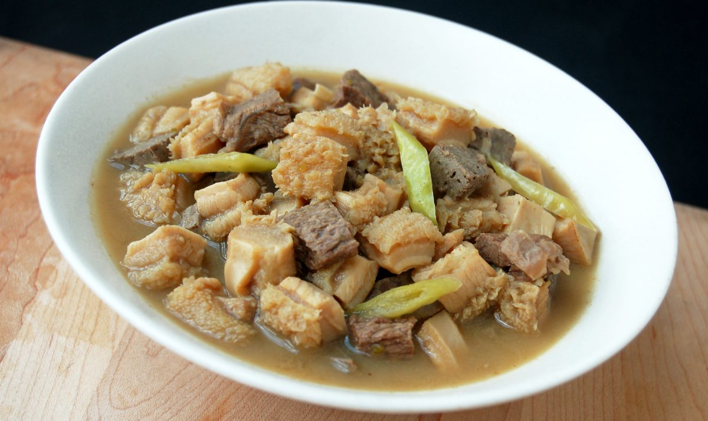

Homepage:
Welcome!
Welcome to my personal space!
My name is Shawn Arlantico and the purpose of this website is to get to know a little more about me.
About Me
Once again, my name is Shawn and I'm currently in my 3rd year in Cal Poly Pomona and I'm majoring in Computer Science.
I am Filipino, I was born in the Philippines and only lived there for 3 years before I moved here to California and have lived here ever since.
My Interests
A list of my interests:
- Video Games
- Origami
- Reading
- Cooking
- Watching Movies/Series
Favorite Recipe
A recipe I enjoy, including ingredients and instructions.
Pinapaitan

Ingredients:
- 600g ox tripe, cleaned, cooked and sliced into small pieces
- 250g beef heart, sliced into small pieces
- 250g beef liver, sliced into small pieces
- 250g beef brisket, sliced into small pieces
- 3 pcs medium sized bitter gourd, seeded and sliced into large chunks
- 1 big packet sinigang mix (tamarind mix)
- 1 to 1.5 liters beef stock
- 1/2 cup cane vinegar
- 1 whole garlic, minced
- 1 thumb size ginger, crushed and sliced finely
- 2 medium size red onion, chopped
- 6 green finger chillies (siling haba)
- 1 tbsp cayenne pepper
- fish sauce
- salt
- freshly ground black pepper
- oil
Instructions:
- Marinate liver for 30 minutes in vinegar then set aside.
- In a pot sauté garlic, ginger and onion in oil.
- Add all meat ingredients except for the liver, stir fry for 1 and brown on all sides
- Add beef stock, bitter gourd and chillies (do not slice). Bring to a boil and simmer for 45 minutes.
- Drain the vinegar out of the liver.
- Remove the chunks of bitter gourd and place them on a blender, blend well.
- Place blended bitter gourd into a fine sieve or a muslin cloth, run some hot stock on top while draining directly on the pot, this will get the maximum bitterness of the bitter gourd while making the soup clear.
- Add sinigang mix and liver simmer for additional 10 minutes, you might need to reduce the amount of sinigang mix according to the sourness you like.
- Flavour with fish sauce (according to your taste) and season with freshly ground black pepper.
Favorite Movie
Rush Hour 2
It's rare that the sequel movie succeeds the first, Rush Hour is a 9/10 while Rush Hour 2 is a 10/10.
Contact Info
Contact Me
Next page